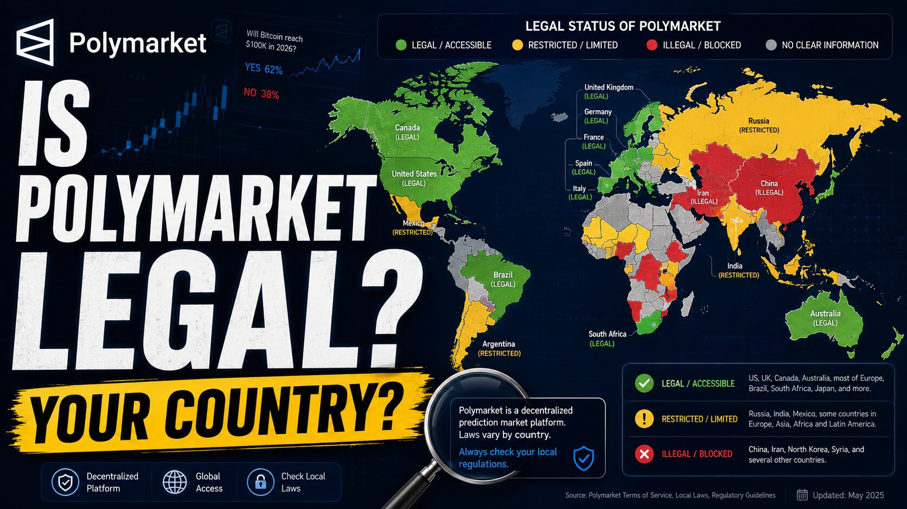

Is Polymarket Legal in Your Country?
Polymarket's legal status isn't one answer — it depends entirely on where you are. The platform is fully open in most of the world, restricted to closing existing positions in over 30 countries, and completely blocked in a handful of sanctioned or court-ordered cases. Below is the current status for 116 countries across the EU, the Americas, Asia and North Africa, plus answers to the questions people ask most.

Quick answer: where Polymarket is open, restricted or blocked
Fully blocked (per Polymarket's own current geoblock list, plus sanctions/court orders): Iran, Syria, Cuba, North Korea, Argentina, Indonesia, Australia, and — as of Polymarket's own documentation — Belgium, Germany, France and Italy.
Close-only (can exit positions, can't open new ones): Poland, Japan, Thailand, Singapore, Russia, and several others. Note: Polymarket's own help documentation currently lists Poland in both its "fully blocked" table and its "close-only" list at the same time — treat Poland as restricted either way, but the exact tier is unclear even from the primary source.
Locally banned but not on Polymarket's own block list — a distinct, murkier category: the Netherlands, Portugal, Hungary, Ireland, Slovakia and Spain all had regulators formally order Polymarket restricted or blocked in 2026, but none of these currently appear on Polymarket's official geoblock page. That means local law may prohibit use even where the platform itself does not technically block you — access and legality are not the same thing here.
Open with no restrictions found: Chile, Peru, Mexico, the Nordic countries, the UAE, and most remaining countries below.
Status changes quickly and sources conflict heavily — regulators are still actively adding countries in 2026. Check the row for your specific country, and treat anything here as a starting point, not a final answer. You can Search for it directly below, or filter by status :
Is Polymarket legal in the European Union?
Restrictions inside the EU come from individual national gambling regulators rather than a single EU-wide rule, which is why status varies sharply from one member state to the next. Note also that a regulator ordering Polymarket blocked and Polymarket actually geoblocking that country are two different things — several EU states below have the former without (currently) having the latter.
- ATAustriaGray area
Is Polymarket legal in Austria? Not on Polymarket's restricted list — access appears open, but local gambling law hasn't been reviewed yet.
- BEBelgiumBlocked
Is Polymarket legal in Belgium? No — Polymarket's own current geoblock list shows Belgium fully blocked (not close-only), on top of the Gaming Commission's blacklist.
- BGBulgariaGray area
Is Polymarket legal in Bulgaria? Not on the restricted list — accessible, but local gambling law hasn't been reviewed yet.
- HRCroatiaGray area
Is Polymarket legal in Croatia? Not on the restricted list — accessible, but local gambling law hasn't been reviewed yet.
- CYCyprusGray area
Is Polymarket legal in Cyprus? Not on the restricted list — accessible, but local gambling law hasn't been reviewed yet.
- CZCzechiaGray area
Is Polymarket legal in Czechia? Not on the restricted list — accessible, but local gambling law hasn't been reviewed yet.
- DKDenmarkOpen
Is Polymarket legal in Denmark? Not on Polymarket's block list, but described elsewhere as genuinely contested/unenforced territory rather than clearly legal — treat as open-but-untested.
- EEEstoniaGray area
Is Polymarket legal in Estonia? Not on the restricted list — accessible, but local gambling law hasn't been reviewed yet.
- FIFinlandOpen
Is Polymarket legal in Finland? Yes — not on Polymarket's block list; described as a passive gray state with no bans or licences issued.
- FRFranceBlocked
Is Polymarket legal in France? No — Polymarket's own current geoblock list shows France fully blocked (not close-only), following the ANJ's ruling that it's unlicensed gambling.
- DEGermanyBlocked
Is Polymarket legal in Germany? No — Polymarket's own documentation lists Germany as fully blocked. Existing positions must be held to resolution before funds can be withdrawn; there's no early-close option.
- GRGreeceGray area
Is Polymarket legal in Greece? Not on the restricted list — accessible, but local gambling law hasn't been reviewed yet.
- HUHungaryGray area
Is Polymarket legal in Hungary? Hungarian regulators ordered it banned in Jan 2026, but Hungary doesn't currently appear on Polymarket's own geoblock list — on-platform status is unclear, even though local law says no.
- IEIrelandGray area
Is Polymarket legal in Ireland? Reports describe a close-only frontend restriction, but Ireland doesn't appear on Polymarket's current official geoblock list — described elsewhere as genuinely contested/unenforced territory.
- ITItalyBlocked
Is Polymarket legal in Italy? No — Polymarket's own documentation lists Italy as fully blocked: users can view markets and data but cannot trade at all.
- LVLatviaGray area
Is Polymarket legal in Latvia? Not on the restricted list — accessible, but local gambling law hasn't been reviewed yet.
- LTLithuaniaGray area
Is Polymarket legal in Lithuania? Not on the restricted list — accessible, but local gambling law hasn't been reviewed yet.
- LULuxembourgGray area
Is Polymarket legal in Luxembourg? Not on the restricted list — accessible, but local gambling law hasn't been reviewed yet.
- MTMaltaGray area
Is Polymarket legal in Malta? Not blocked, and reportedly one of only two jurisdictions (with Gibraltar) actively moving toward a dedicated licensing framework rather than a ban.
- NLNetherlandsGray area
Is Polymarket legal in the Netherlands? The KSA ordered a halt in Feb 2026 under threat of €420k weekly fines — but the Netherlands does not currently appear on Polymarket's own geoblock list, so on-platform status is unclear even though the regulatory order stands.
- PLPolandClose-only
Is Polymarket legal in Poland? No — restricted since Jan 2025 after a finance-ministry blacklist. Note: Polymarket's own current documentation lists Poland in both its "fully blocked" table and its "close-only" list at once, so the exact platform-side tier is unclear even from the primary source.
- PTPortugalGray area
Is Polymarket legal in Portugal? SRIJ ordered the platform out within 48 hours in Jan 2026 — but Portugal isn't on Polymarket's current official geoblock list, so it's unclear whether the block is still enforced platform-side, even though the local order stands.
- RORomaniaGray area
Is Polymarket legal in Romania? Not on Polymarket's current block list, but at least one tracker describes Romania as having taken enforcement action mirroring France/Belgium — treat as contested, not clearly open.
- SKSlovakiaGray area
Is Polymarket legal in Slovakia? Reported as a new close-only addition earlier in 2026, but Slovakia doesn't appear on Polymarket's current official geoblock list — status unclear.
- SISloveniaGray area
Is Polymarket legal in Slovenia? Not on the restricted list — accessible, but local gambling law hasn't been reviewed yet.
- ESSpainGray area
Is Polymarket legal in Spain? Spain's DGOJ reportedly ordered Polymarket (and Kalshi) blocked on 26 May 2026 for lacking a gambling licence — but Spain doesn't appear on Polymarket's own current geoblock list, so it may still be technically reachable even though local law prohibits it.
- SESwedenOpen
Is Polymarket legal in Sweden? Yes — not on Polymarket's block list; described as a passive gray state with no bans or licences issued.
Is Polymarket legal in North Africa?
- DZAlgeriaGray area
Is Polymarket legal in Algeria? Not on the restricted list — accessible, but local gambling/crypto law hasn't been reviewed yet.
- EGEgyptGray area
Is Polymarket legal in Egypt? Accessible despite a strict crypto ban; users buy USDC peer-to-peer.
- LYLibyaClose-only
Is Polymarket legal in Libya? No — Polymarket's current help-center page actually lists Libya in its fully-blocked table, not close-only; treat as blocked, not close-only.
- MAMoroccoGray area
Is Polymarket legal in Morocco? Not on the restricted list — accessible, but local gambling/crypto law hasn't been reviewed yet.
- SDSudanBlocked
Is Polymarket legal in Sudan? No — listed on Polymarket's own current fully-blocked table, not just close-only.
- TNTunisiaGray area
Is Polymarket legal in Tunisia? Not on the restricted list — accessible, but local gambling/crypto law hasn't been reviewed yet.
Is Polymarket legal in the Americas?
Latin America has seen the sharpest swings in 2026 — Chile and Peru remain fully open while Argentina, Brazil, Colombia and Venezuela have all faced enforcement action within the same year.
- AGAntigua and BarbudaGray area
Is Polymarket legal in Antigua and Barbuda? Not on the restricted list — accessible, local law not yet reviewed.
- BSBahamasGray area
Is Polymarket legal in the Bahamas? Not on the restricted list — accessible, local law not yet reviewed.
- BBBarbadosGray area
Is Polymarket legal in Barbados? Not on the restricted list — accessible, local law not yet reviewed.
- BZBelizeGray area
Is Polymarket legal in Belize? Not on the restricted list — accessible, local law not yet reviewed.
- CACanadaGray area
Is Polymarket legal in Canada? Blocked in Ontario specifically per Polymarket's own geoblock list; other reports describe additional provincial restrictions (British Columbia, Alberta, Quebec) — open elsewhere.
- CRCosta RicaGray area
Is Polymarket legal in Costa Rica? Not on the restricted list — accessible, local law not yet reviewed.
- CUCubaBlocked
Is Polymarket legal in Cuba? No — fully blocked, confirmed on Polymarket's own current geoblock list under OFAC sanctions.
- DMDominicaGray area
Is Polymarket legal in Dominica? Not on the restricted list — accessible, local law not yet reviewed.
- DODominican RepublicGray area
Is Polymarket legal in the Dominican Republic? Not on the restricted list — accessible, local law not yet reviewed.
- SVEl SalvadorGray area
Is Polymarket legal in El Salvador? Not on the restricted list — accessible, local law not yet reviewed.
- GDGrenadaGray area
Is Polymarket legal in Grenada? Not on the restricted list — accessible, local law not yet reviewed.
- GTGuatemalaGray area
Is Polymarket legal in Guatemala? Not on the restricted list — accessible, local law not yet reviewed.
- HTHaitiGray area
Is Polymarket legal in Haiti? Not on the restricted list — accessible, local law not yet reviewed.
- HNHondurasGray area
Is Polymarket legal in Honduras? Not on the restricted list — accessible, local law not yet reviewed.
- JMJamaicaGray area
Is Polymarket legal in Jamaica? Not on the restricted list — accessible, local law not yet reviewed.
- MXMexicoOpen
Is Polymarket legal in Mexico? Fully accessible, no geo-block, though prediction markets sit in a legal gray zone.
- NINicaraguaBlocked
Is Polymarket legal in Nicaragua? No — listed on Polymarket's own current fully-blocked table, not close-only.
- PAPanamaGray area
Is Polymarket legal in Panama? Not on the restricted list — accessible, local law not yet reviewed.
- KNSaint Kitts and NevisGray area
Is Polymarket legal in Saint Kitts and Nevis? Not on the restricted list — accessible, local law not yet reviewed.
- LCSaint LuciaGray area
Is Polymarket legal in Saint Lucia? Not on the restricted list — accessible, local law not yet reviewed.
- VCSaint Vincent and the GrenadinesGray area
Is Polymarket legal in Saint Vincent and the Grenadines? Not on the restricted list — accessible, local law not yet reviewed.
- TTTrinidad and TobagoGray area
Is Polymarket legal in Trinidad and Tobago? Not on the restricted list — accessible, local law not yet reviewed.
- USUnited StatesBlocked
Is Polymarket legal in the US? The global exchange is fully blocked on Polymarket's own current geoblock list for US residents; a separate CFTC-regulated US exchange launched in late 2025 operates independently of the global platform.
- ARArgentinaBlocked
Is Polymarket legal in Argentina? No — blocked since March 2026 after a Buenos Aires court ruling and ISP-level order (note: Argentina does not currently appear on Polymarket's own official geoblock list, so this is a local, not platform-side, block).
- BOBoliviaGray area
Is Polymarket legal in Bolivia? Not on the restricted list — accessible, local law not yet reviewed.
- BRBrazilGray area
Is Polymarket legal in Brazil? Brazil's National Monetary Council blocked it in April 2026 alongside 26 other prediction sites — but Brazil doesn't appear on Polymarket's current official geoblock list, so platform-side status is unclear even though the local order stands.
- CL
- COColombiaClose-only
Is Polymarket legal in Colombia? Not geo-blocked by Polymarket, but Coljuegos ordered ISPs to block it in 2025 — local, not platform-side, restriction.
- ECEcuadorGray area
Is Polymarket legal in Ecuador? Not on the restricted list — accessible, local law not yet reviewed.
- GYGuyanaGray area
Is Polymarket legal in Guyana? Not on the restricted list — accessible, local law not yet reviewed.
- PYParaguayGray area
Is Polymarket legal in Paraguay? Not on the restricted list — accessible, local law not yet reviewed.
- PE
- SRSurinameGray area
Is Polymarket legal in Suriname? Not on the restricted list — accessible, local law not yet reviewed.
- UYUruguayGray area
Is Polymarket legal in Uruguay? Not on the restricted list — accessible, local law not yet reviewed.
- VEVenezuelaBlocked
Is Polymarket legal in Venezuela? No — listed on Polymarket's own current fully-blocked table, not close-only.
Is Polymarket legal in Asia?
Asia has the widest range of outcomes on this list, from fully open access in South Korea and the UAE to a total OFAC-sanctioned block in Iran and North Korea.
- AFAfghanistanGray area
Is Polymarket legal in Afghanistan? Not on the restricted list — accessible, local law not yet reviewed.
- AMArmeniaGray area
Is Polymarket legal in Armenia? Not on the restricted list — accessible, local law not yet reviewed.
- AUAustraliaBlocked
Is Polymarket legal in Australia? No — ACMA ordered Australian ISPs to block Polymarket in August 2025 under the Interactive Gambling Act, after the platform was found to have paid influencers to target Australian bettors around the 2025 federal election. At least one tracker instead describes Australia as close-only rather than fully blocked, so the exact tier varies by source, but access is restricted either way — Kalshi has also self-restricted Australian users.
- AZAzerbaijanGray area
Is Polymarket legal in Azerbaijan? Not on the restricted list — accessible, local law not yet reviewed.
- BHBahrainGray area
Is Polymarket legal in Bahrain? Not on the restricted list — accessible, local law not yet reviewed.
- BDBangladeshGray area
Is Polymarket legal in Bangladesh? Accessible, no geo-block, but crypto is restricted and gambling is illegal.
- BTBhutanGray area
Is Polymarket legal in Bhutan? Not on the restricted list — accessible, local law not yet reviewed.
- BNBruneiGray area
Is Polymarket legal in Brunei? Not on the restricted list — accessible, local law not yet reviewed.
- KHCambodiaGray area
Is Polymarket legal in Cambodia? Not on the restricted list — accessible, local law not yet reviewed.
- CNChinaGray area
Is Polymarket legal in China? Not on Polymarket's restricted list, but China's blanket crypto ban applies.
- GEGeorgiaGray area
Is Polymarket legal in Georgia? Not on the restricted list — accessible, local law not yet reviewed.
- INIndiaGray area
Is Polymarket legal in India? Most ISPs block the domain, but there's no official geo-block from Polymarket.
- IDIndonesiaGray area
Is Polymarket legal in Indonesia? A local block was reported on May 22, 2026 after a market on the president drew scrutiny — but Indonesia doesn't currently appear on Polymarket's own official geoblock list, so this is a local, not platform-side, block.
- IRIranBlocked
Is Polymarket legal in Iran? No — fully blocked, confirmed on Polymarket's own current geoblock list under OFAC sanctions.
- IQIraqBlocked
Is Polymarket legal in Iraq? No — listed on Polymarket's own current fully-blocked table, not close-only.
- ILIsraelGray area
Is Polymarket legal in Israel? Not on the restricted list — accessible, local law not yet reviewed.
- JPJapanBlocked
Is Polymarket legal in Japan? No — listed on Polymarket's own current fully-blocked table. Some third-party sources describe it as only "frontend UI restricted," so treat with some caution, but the primary source shows a full block.
- JOJordanGray area
Is Polymarket legal in Jordan? Not on the restricted list — accessible, local law not yet reviewed.
- KZKazakhstanGray area
Is Polymarket legal in Kazakhstan? Not on the restricted list — accessible, local law not yet reviewed.
- KWKuwaitGray area
Is Polymarket legal in Kuwait? Not on the restricted list — accessible, local law not yet reviewed.
- KGKyrgyzstanGray area
Is Polymarket legal in Kyrgyzstan? Not on the restricted list — accessible, local law not yet reviewed.
- LALaosGray area
Is Polymarket legal in Laos? Not on the restricted list — accessible, local law not yet reviewed.
- LBLebanonBlocked
Is Polymarket legal in Lebanon? No — listed on Polymarket's own current fully-blocked table, not close-only.
- MYMalaysiaGray area
Is Polymarket legal in Malaysia? Accessible; sits between gambling law and securities regulation.
- MVMaldivesGray area
Is Polymarket legal in the Maldives? Not on the restricted list — accessible, local law not yet reviewed.
- MNMongoliaGray area
Is Polymarket legal in Mongolia? Not on the restricted list — accessible, local law not yet reviewed.
- MMMyanmarBlocked
Is Polymarket legal in Myanmar? No — listed on Polymarket's own current fully-blocked table, not close-only.
- NPNepalGray area
Is Polymarket legal in Nepal? Not on the restricted list — accessible, local law not yet reviewed.
- KPNorth KoreaBlocked
Is Polymarket legal in North Korea? No — fully blocked, confirmed on Polymarket's own current geoblock list under OFAC sanctions.
- OMOmanGray area
Is Polymarket legal in Oman? Not on the restricted list — accessible, local law not yet reviewed.
- PKPakistanGray area
Is Polymarket legal in Pakistan? Accessible, no geo-block; Pakistan ranks 3rd globally in crypto adoption.
- PHPhilippinesGray area
Is Polymarket legal in the Philippines? Accessible, no geo-block, but prediction markets sit in a legal gray zone.
- QAQatarGray area
Is Polymarket legal in Qatar? Not on the restricted list — accessible, local law not yet reviewed.
- RURussiaBlocked
Is Polymarket legal in Russia? No — listed on Polymarket's own current fully-blocked table (sanctions-related), not close-only.
- SASaudi ArabiaGray area
Is Polymarket legal in Saudi Arabia? Not on the restricted list — accessible, local law not yet reviewed.
- SGSingaporeBlocked
Is Polymarket legal in Singapore? No — Polymarket's own current documentation lists Singapore in both its fully-blocked table and its close-only list at once; the GRA has also taken enforcement action. Treat as restricted either way, tier unclear.
- KRSouth KoreaGray area
Is Polymarket legal in South Korea? Accessible, not geo-blocked, though gambling is broadly illegal under Korean law.
- LKSri LankaGray area
Is Polymarket legal in Sri Lanka? Not on the restricted list — accessible, local law not yet reviewed.
- SYSyriaBlocked
Is Polymarket legal in Syria? No — fully blocked, confirmed on Polymarket's own current geoblock list under OFAC sanctions.
- TJTajikistanGray area
Is Polymarket legal in Tajikistan? Not on the restricted list — accessible, local law not yet reviewed.
- THThailandBlocked
Is Polymarket legal in Thailand? No — Polymarket's own current documentation lists Thailand in both its fully-blocked table and its close-only list at once. Treat as restricted either way, tier unclear.
- TLTimor-LesteGray area
Is Polymarket legal in Timor-Leste? Not on the restricted list — accessible, local law not yet reviewed.
- TRTurkeyGray area
Is Polymarket legal in Turkey? Accessible despite strict online gambling law; deposits via BtcTurk, Paribu.
- TMTurkmenistanGray area
Is Polymarket legal in Turkmenistan? Not on the restricted list — accessible, local law not yet reviewed.
- AEUnited Arab EmiratesOpen
Is Polymarket legal in the UAE? Yes — accessible, no geo-block, crypto-friendly rules, zero personal income tax.
- UZUzbekistanGray area
Is Polymarket legal in Uzbekistan? Not on the restricted list — accessible, local law not yet reviewed.
- VNVietnamGray area
Is Polymarket legal in Vietnam? Accessible amid a fast-evolving crypto regulatory landscape.
- YEYemenBlocked
Is Polymarket legal in Yemen? No — listed on Polymarket's own current fully-blocked table, not close-only.
No countries match that search.
Frequently asked questions
- Is Polymarket legal in the United States?
- The global platform is closed to US residents. A separate CFTC-regulated exchange launched in late 2025 and requires full identity verification.
- Is Polymarket banned in any country?
- Yes — Polymarket's own current documentation lists 34 countries as fully blocked (including Belgium, Germany, France, Italy, Australia, and all OFAC-sanctioned territories such as Iran, Syria, Cuba and North Korea), plus a small close-only tier. Separately, several more countries — Netherlands, Portugal, Hungary, Spain, Argentina, Brazil, Indonesia and others — have local regulatory or court orders against Polymarket that aren't (yet) reflected in Polymarket's own geoblock list, so "blocked by local law" and "blocked by the platform" don't always match.
- What does "close-only" mode mean?
- Residents can exit or resolve positions they already hold, but can't open new trades. It's Polymarket's standard response to a local regulator's enforcement action. As of this writing, Polymarket's own documentation lists Poland, Singapore, and Thailand in both its "fully blocked" and "close-only" categories at once, so treat the exact tier for those three as unconfirmed even from the primary source.
- Can I use a VPN to access Polymarket from a restricted country?
- Polymarket's terms prohibit circumventing geo-restrictions, and detected VPN use can move an account to close-only or trigger closure. Some countries attach their own legal penalties too.
- Why do some EU countries block Polymarket while others don't?
- Each EU country's gambling regulator decides independently — there's no single EU-wide ruling. Belgium, Germany, France and Italy are on Polymarket's own current block list. The Netherlands, Portugal, Hungary, Spain, Ireland and Slovakia have all had a regulator order restrictions in 2026, but none of these currently appear on Polymarket's own geoblock page — so local law and platform-level access may not currently agree for those six.
Restriction data cross-checked against Polymarket's own current geographic-restrictions documentation (help.polymarket.com/en/articles/13364163-geographic-restrictions, accessed late July 2026) plus country-specific regulatory reporting. Polymarket's own documentation contains internal inconsistencies as of this writing (Poland, Singapore, Thailand, and Taiwan each appear in both its "fully blocked" table and its separate "close-only" list at the same time) — these are flagged in the relevant rows rather than silently resolved. Several additional countries (Netherlands, Portugal, Hungary, Spain, Ireland, Slovakia, Argentina, Brazil, Indonesia) have local regulatory or court orders against Polymarket that are not currently reflected on Polymarket's own geoblock list; these are marked "gray area" rather than a firm status, since local legality and platform-side access are two different questions. Australia's ban was imposed directly by the Australian Communications and Media Authority (ACMA) at the ISP level in August 2025 under the Interactive Gambling Act, independent of Polymarket's own geoblock list; a minority of trackers describe it as close-only rather than a full block. Third-party "Polymarket country list" articles found in general web search disagree heavily with each other and with Polymarket's own documentation — several were excluded as unreliable. Status changes quickly — re-verify against the primary source before relying on this for a decision. Country page links above are placeholders; point them at your real per-country URLs.
Disclaimer: This post is for informational purposes only and is not legal advice. Regulatory status varies by country and can change quickly. Do your own research and check your local rules before using any prediction market platform.